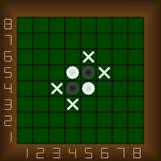
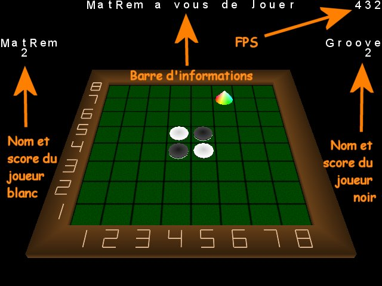
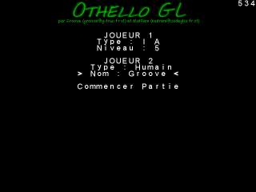

| Presentation |
|
The rules Othello is a game where you need to have the maximum of pawn on the tray at the end of the game. Each player put down a pawn afterward the autre player. The white player (the number 1) allways start the game. To turn over the competitor pawn, you need to flank the competitor pawn with our pawn. Here is an exemple of the possibility of the white player to put down his frist pawn.  The cross point out all the positions where the white player can put his pawn. The display Here is the display you can see in game.  Look at the top right corner where it is print the number of image per second. |
| Start game |
|
 Choix des joueurs The start menu allow to choose the type of each player, if there are human or an AI. In the case of an human player you can enter his name and in the case of an AI player, you can choose his level. The frist player is allways the white player and the second player is allways the black player. The AI The AI have 5 difficults level. He is build on a couple of concept : Compting of pawns and value of the tray cases. The AI works in 3 stages. - It search the cases with the highest value where a pawn can be put down. - With the find cases, it search the maximum number of pawn it can turn over. - At last, if there is several posibles pawn , it make a random choose. |
| Controls |
|
Choose a position During the game, it printf the name of the player who must play in the information tray. This player must move the multi-colored curcor over the case he have choose and he valid his selected case. To done this, he can use the arrows or the numeric keypad and use the "enter" key to valid. Move and turn the tray x : Turn the tray around the axis X in the positive direction X : Turn the tray around the axis X in the negative direction y : Turn the tray around the axis Y in the positive direction Y : Turn the tray around the axis Y in the negative direction z : Turn the tray around the axis Z in the positive direction Z : Turn the tray around the axis Z in the negative direction + : Move the tray closer. - : Move the tray away. Echap : Show the main main at each time. |
| Credits |
|
Programmation & Conception : - Groove, www.g-truc.fr.st - MatRem, www.codegba.fr.st Special thanks to : - Anybody, German translation - Gautier, Spanish translation - tChai, beta-test - GameLab regular's (www.game-lab.com) as Bicou, Blade, Invalide, RedEyes, Squintik ... |
| G-Othello, Copyright (c) 2003 G-Truc Creation. |